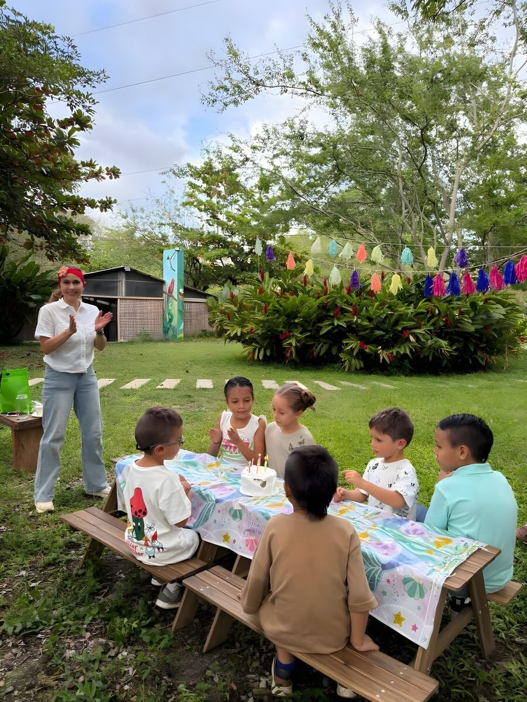
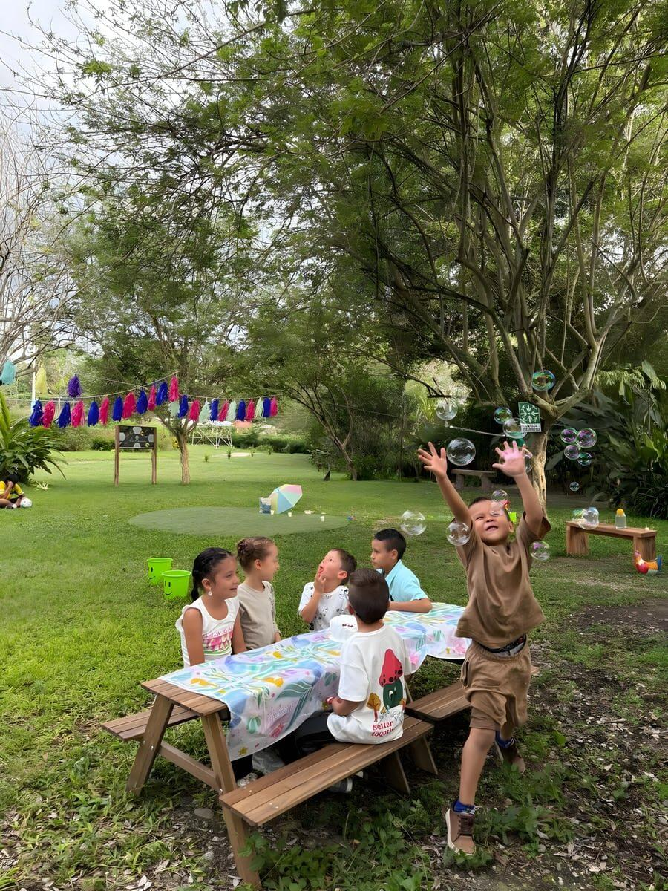

Alquiler de espacios
Cinco espacios para alquilar
Escoge por tamaño y por lo que va a pasar ese día.
Un espacio para cada plan
-

Usos recomendados en Alameda
-

Bodas
En el prado entero cabe una ceremonia grande, con sombra en los bordes para los invitados.
-

Empresarial
Es el que más gente admite: cabe un lanzamiento o una convención de pie.
-

Cumpleaños
Sitio de sobra para la piñata, la mesa larga y los que salen corriendo.
-
-

Usos recomendados en La Vega
-

Bodas
Sin un solo desnivel: la carpa y la pista se montan derechas, sin nivelar nada.
-

Cumpleaños
Piso parejo de punta a punta: entran inflables y juegos sin buscarles un tramo plano.
-

Bienestar
Superficie pareja de borde a borde: los tapetes quedan todos a la misma altura.
-
-
Usos recomendados en Teatrino
-

Bodas íntimas
La copa del árbol hace de techo: ceremonias pequeñas, más recogidas que en la Alameda.
-

Cumpleaños
La sombra del árbol cubre casi todo el claro: la fiesta no necesita toldo aparte.
-

Charlas y talleres
El césped hace de platea natural para un grupo pequeño reunido en círculo.
-
-

Usos recomendados en Taller
45 personas como máximo
-

Empresarial
Es el único techado del predio: la reunión sigue igual aunque llueva.
-

Cumpleaños infantil
Piso firme y seco para los juegos de los más chicos, sin barro ni sol directo.
-

Talleres
Una clase entera cabe sentada, con el material a resguardo.
-
-

Usos recomendados en Cancha
30 jugadores y 20 espectadores como máximo
-

Cumpleaños deportivos
El campo despejado alcanza para un torneo entero o los juegos de la fiesta.
-

Integración empresarial
Un partido de por medio cambia cualquier jornada de equipo.
-

Familiares
Tardes de fútbol y juegos con el guadual haciendo de borde y de sombra.
-